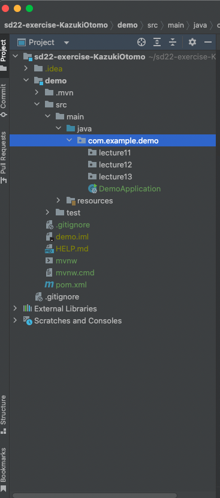
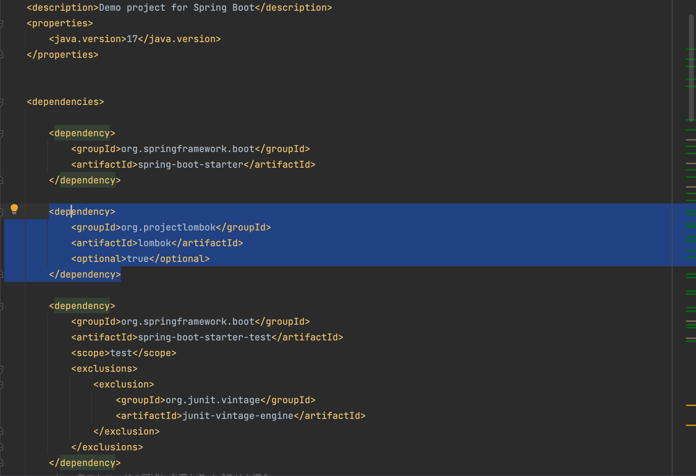
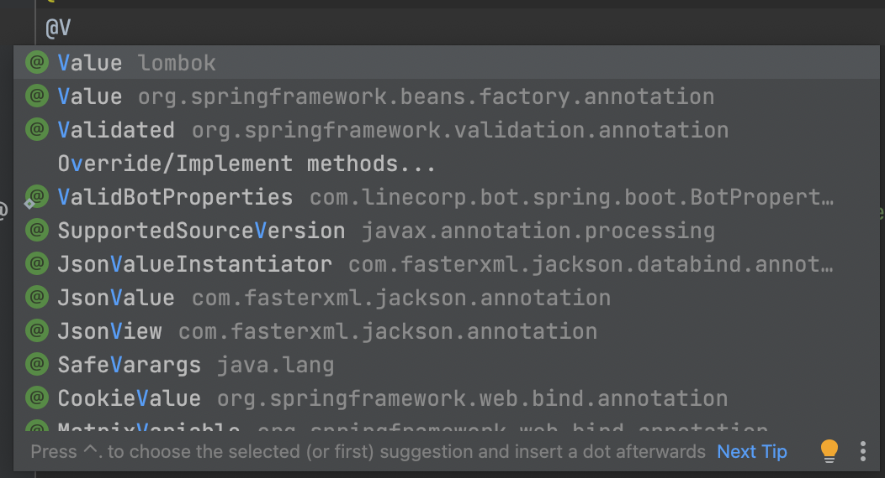
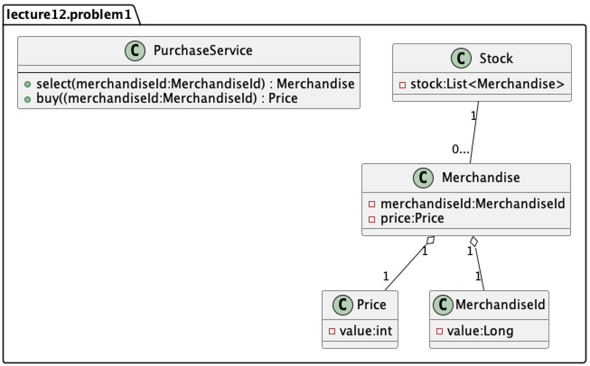

（変更していなければ）フォルダ名がsd22-exercise-XXXXXXXとなっていることを確認してください。

int quantity;
BigDecimal amount;
このコードは、数量（quantity）をマイナス21億からプラス21億まで、 金額（amount）をほぼ無限大かつ小数点21億桁まで扱うような宣言になっています。
しかし、業務内で扱う数量や金額はそのような値が登場することはない。 文法的には問題ないが、異常な値が混入する（バグ）可能性が高くなります。
この問題を防ぐために用いるデザインパターンが、値オブジェクトです。
Lombokというライブラリを使うと値オブジェクトを簡潔に書くことができます。
Amount.java （Lombokを使用した版）
import lombok.Value;
@Value
public class Amount {
long value;
}
実際に生成されているコードは以下のようになります。 注目してほしい点は、
・デフォルトコンストラクタ（引数なしコンストラクタ）が生成できない
・Setterが利用できない
・Getterは利用できる
・継承が利用できない
Amount.java （同じことをやろうとした版）
public class Amount {
private final long value;
private final String name;
public Amount(final long id, final String name) {
this.value = id;
this.name = name;
}
public long getValue() {
return this.value;
}
public String getName() {
return this.name;
}
@Override
public boolean equals(final Object o) {
if (o == this) return true;
if (!(o instanceof Amount)) return false;
final Amount other = (Amount) o;
if (this.getValue() != other.getValue()) return false;
final Object this$name = this.getName();
final Object other$name = other.getName();
if (this$name == null ? other$name != null : !this$name.equals(other$name)) return false;
return true;
}
@Override
public int hashCode() {
final int PRIME = 59;
int result = 1;
final long $id = this.getValue();
result = result * PRIME + (int) ($id >>> 32 ^ $id);
final Object $name = this.getName();
result = result * PRIME + ($name == null ? 43 : $name.hashCode());
return result;
}
@Override
public String toString() {
return "Amount(id=" + this.getValue() + ", name=" + this.getName() + ")";
}
}
値オブジェクトを活用したクラスの例と用意できるテストを以下に示す。
Merchandise.java
public class Merchandise {
private final Amount amount;
public Merchandise(Amount amount) {
if (amount.getValue() < 0) throw new IllegalArgumentException("負の値が入っています");
this.amount = amount;
}
}
MerchandiseTest.java
import org.junit.jupiter.api.Test;
import static org.junit.jupiter.api.Assertions.assertThrows;
class MerchandiseTest {
@Test
void 金額がマイナスの商品はインスタンス化することができない() {
assertThrows(IllegalArgumentException.class,
() -> new Merchandise(new Amount(-1)));
}
}
このテストでは、商品（Merchandise）クラスが異常な値を持つことが絶対にないという検証になっていると共に、「金額がマイナスになることはない」という業務におけるルールも読み取ることができる。 また、独自型を設定することにより、値の渡し間違いを防ぐことができるという利点もある。（例えば、ここでAmountをint型にしていた場合、数量やIDなどといった別の値を間違って渡してしまう恐れがある）
pom.xmlを開き、
pom.xmlに追加するもの（コピペ推奨）
<dependency>
<groupId>org.projectlombok</groupId>
<artifactId>lombok</artifactId>
<optional>true</optional>
</dependency>
参考画像 
「@V」と打って、以下のような予測変換が出ていれば導入に成功しています。 
以下のクラス図を読み取った上で実装してください。（なお、作成するクラスは、lecture12パッケージの中に、Problem1パッケージを作ってまとめて下さい。）
メソッドやコンストラクタなど、必要だと思ったものについては随時追加して構いません。

PurchaseServiceのselect()とbuy()について、 動作を検証できるようなテストを書いてください。
以下、ヒントです。
PurchaseTest.java
public class PurchaseTest {
final Stock stock;
final IPurchaseService purchaseService;
public PurchaseTest(Stock stock, IPurchaseService purchaseService) {
this.stock = stock;
this.purchaseService = purchaseService;
}
// 全てのテストケースよりも一番先に走るメソッドです
@BeforeEach
void setUp() {
var merchandise = new Merchandise(new MerchandiseId(101L), new Price(500));
var merchandise1 = new Merchandise(new MerchandiseId(102L), new Price(1000));
stock.add(merchandise);
stock.add(merchandise1);
}
@Test
void buyメソッドが動作している() {
// 以下、動作しているか確かめるようなテスト
}
@Test
void selectメソッドが動作している() {
// 以下、動作しているか確かめるようなテスト
}
}
テストの作り方については、前回の該当部分
コレクションオブジェクト（List, Set, Map, 配列など）を扱うコードは複雑になりがちです。
例えば、
・Listに要素を追加する
・Listの0番目を抽出する
といった副作用のある処理を複数箇所にわたって書いてしまった場合、 バグの原因となると共に、変更する際のチェック範囲を増加させ、 変更容易性の低いコードとなってしまいます。
コレクションの参照をそのまま渡したGetterメソッド（よくない例）
public class Cards {
private final List<Card> cards;
// このメソッドを呼び出した先で判断/加工/計算が行われる可能性がある
public List<Card> getList() {
return this.cards;
}
}
この問題を解決するためのデザインパターンが、 ファーストクラスコレクションパターンです。
これは、コレクション型のインスタンス変数を１つだけ持つ専用クラスを作り、 コレクションに関するロジックをカプセル化することで、 コレクションを操作するロジックをコレクションオブジェクトに閉じ込めることを目指しています。
サンプルコード（ファーストクラスコレクション）
public class Cards {
private final List<Card> cards;
public Cards(){
this.cards = new ArrayList<Card>();
}
// コレクションを操作するロジックをクラス内に閉じ込める
void add(Card card) { ... }
void removeIfExist(Card card) { ... }
int count() { ... }
}
また、コレクションオブジェクトは、業務の関心事そのものであることが多いです。
例えば、同じCardインスタンスを持つコレクションオブジェクトでも、 「デッキ」と「手札」では、ルールや振る舞いは異なるものであるはずです。
なので、それぞれ専用のクラスを作り、それぞれに対応した専用のクラスを用意することで 業務ロジックをわかりやすく整理し、コードの変更を楽で安全にすることにつながります。
演習1で作成したクラスについて、 ファーストクラスコレクションパターンで書き換えてみましょう。 (書き換えたクラス群については、lecture12 > Problem2にまとめておいてください)
Enumは列挙型とも呼ばれ、区分定数の一覧を宣言する用途でよく使われています。
public enum Country {
America,
China,
Japan,
Germany,
TheUnitedKingdom,
}
列挙型は、Java以外の言語でもよく用意されていますが、 Javaでは列挙型もクラスとして扱われます。 なので、
区分ごとの値をインスタンス変数に保持する
区分ごとに異なるロジックをメソッドとして記述することができる
といった使い方ができます。この手法を区分オブジェクトと呼びます。
やり方としては、
Country.java
public enum Country {
/**
* ()でコンストラクタに引数を渡す
*/
America(1, "アメリカ"),
China(86, "中国"),
Japan(81, "日本"),
Germany(49, "ドイツ"),
TheUnitedKingdom(44, "イギリス"),
; // セミコロンで要素とクラス定義を区切る
private int code; // カントリーコード
private String japaneseName; // 日本語名
/**
* コンストラクタ
* かならずprivate指定でなければならない
*/
private Country (int code, String japaneseName) {
this.code = code;
this.japaneseName = japaneseName;
}
public int getCode(){
return code;
}
public String getJapaneseName(){
return japaneseName;
}
}
1つ注意しないといけないのが、 enumのコンストラクタは必ずprivate指定でないと行けない点で、 private以外を指定した場合はコンパイルエラーとなる。 これはenumの要素が新規生成されるのを防ぐためである。
Country.javaを使う側のコード
Country c = Country.China;
int code = c.getCode();
String japaneseName = c.getJapaneseName();
このように、区分ごとに異なる処理（業務ロジック）を、区分ごとに別のクラスに独立させると、 オブジェクト指向らしいコードの整理ができます。 つまり、どこに何が書いてあるかがわかりやすくなるとともに、 新しく機能追加する際に、どこに書くべきなのかがわかりやすくなります。
また、区分オブジェクトを活用することによって、 switch文やif文を使った条件分岐を減らすことも可能です。
Card.java
class Card{
final String number;
final String mark;
// このように、フィールド名だけで区別しようとすると、例えばインスタンス化の時に謝って逆順に挿入する可能性がある。
public Card (String number, String mark) {
this.number = number;
this.mark = mark;
}
public String getContent(){
return "符号は" + this.mark + "数字は" + this.number;
}
}
実行クラス
class main{
public static void main(String[] args) {
// 下記の二つともコンパイルには成功するが...
var card = new Card("1", "ハート");
var card1 = new Card("スペード", "6");
card.getContent();
// ここで、符号と数字が逆転したバグが生じてしまう（符号と数字の表示が逆になる 例：「符号は6 数字はスペード」）
card1.getContent();
}
}
Card.java
public class Card {
// 値を扱うための独自クラスを作成する（値オブジェクト）
final Number number;
// 区分を表現するEnum
final Mark mark;
public Card(Number number, Mark mark) {
// 不正なインスタンス化を防御するガード節
if (number.getValue() < 0 || number.getValue() > 13) throw new IllegalArgumentException("不正な数字のCardは作れない");
this.number = number;
this.mark = mark;
}
public String getContent() {
return this.mark.name + "," + this.number.getValue();
}
}
Number.java
@Value
public class Number {
int value;
}
Mark.java
public enum Mark {
スペード,
クローバー,
ダイヤ,
ハート
}
実行用クラス
public class main {
public static void main(String[] args) {
var card = new Card(new Number(1), Mark.クローバー);
// 独自型を設定することで、変数を逆順に入れられる可能性がなくなる
var card1 = new Card(Mark.スペード, new Number(6));
card.getContent();
card1.getContent();
}
}
値オブジェクト、区分オブジェクト、ファーストクラスコレクションのいずれもやろうとしていることは一緒で、「プログラムが不正な動作をしないように、適切な型定義を行うことで防御すること」です。これを型安全性と言います。
良くない例のように、フィールド名で区別することも可能ですし、値オブジェクトを使うとクラスの数が余計に増えていくと感じるかもしれませんが、型安全性を確保できるメリットは想像以上に大きいです。